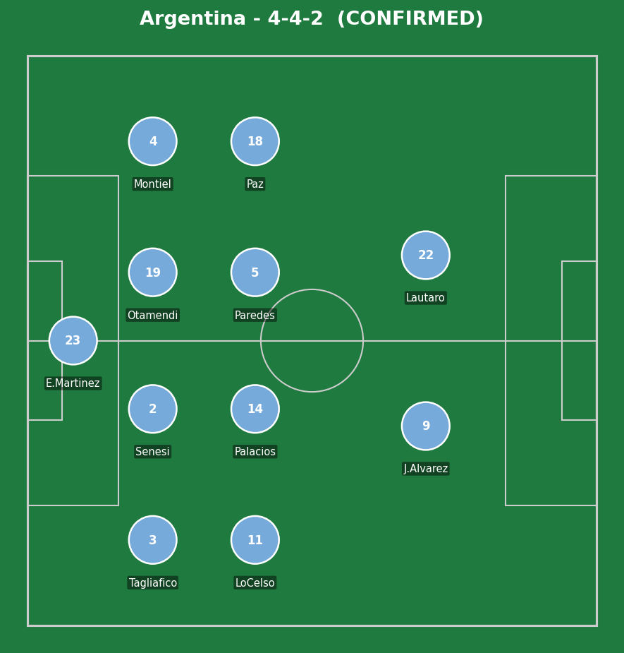
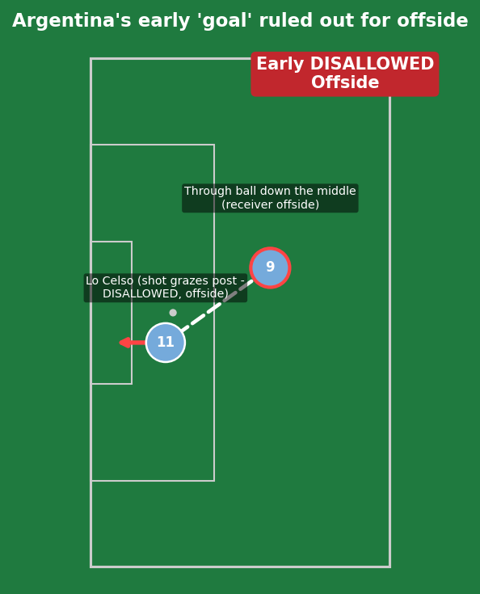
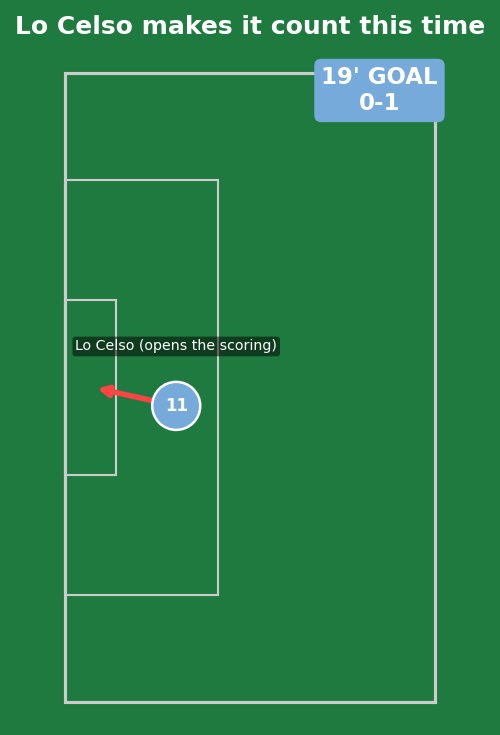
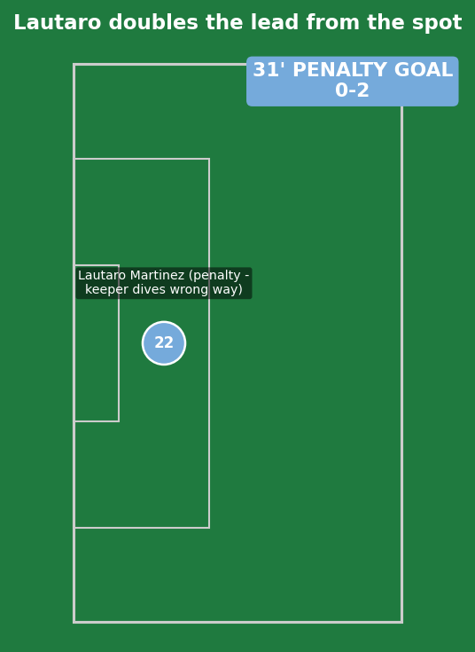
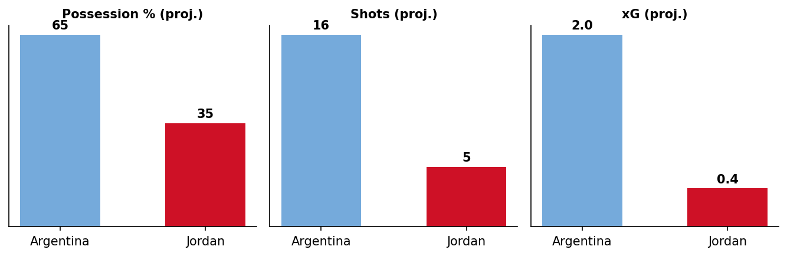

Jordan vs Argentina
Argentina arrive having already secured top spot in Group J with two wins from two, scoring five without conceding - a run that includes Messi's historic hat-trick against Algeria and the brace against Austria that made him the World Cup's outright all-time leading scorer with 18 goals. With qualification already locked in, this match is squarely about rotation and squad management heading into the knockouts.
Jordan, making their first-ever World Cup appearance, have already been eliminated after losing to both Austria and Algeria - but they've scored in both matches and were actually leading Algeria with 25 minutes to go before conceding twice, undone largely by repeated vulnerability from corners (three of their five conceded goals have come from set pieces). A first World Cup point, or even just a goal from Ali Olwan or Musa Al-Taamari, would be a genuine point of pride from their debut tournament.


Jordan (3-4-2-1): Abulaila; Al-Arab, Nasib, Haddad (c); Abudahab, Al Rawabdeh, Al-Rashdan, Al-Azaizeh; Taha, Fakhouri; Olwan. Argentina (4-4-2): E. Martinez; Tagliafico, Senesi, Otamendi (c), Montiel; Lo Celso, Palacios, Paredes, Paz; J. Alvarez, Lautaro Martinez.
Confirmed: Messi starts on the bench, alongside Musso, Romero, Molina, Mac Allister, De Paul, Enzo Fernandez, and Almada - a near-total overhaul from Argentina's first-choice XI. Lautaro Martinez does start, however, partnering Julian Alvarez up top. Jordan go with a back three rather than the flat back four predicted, built around Ali Olwan as the lone striker.

A great early through ball down the middle picked out a teammate in an offside position before Lo Celso's resulting shot grazed the outside of the post - correctly ruled out. A warning sign of things to come for Jordan, even with the goal disallowed.

Argentina's territorial control finally told - Lo Celso got his goal for real this time, with Jordan's back three unable to repeat the offside trap that had bailed them out minutes earlier.

A penalty awarded to Argentina, and Lautaro Martinez made no mistake - firing across goal to the right as the Jordan goalkeeper dived the wrong way. A comfortable platform heading into the closing stages of the first half.
Despite trailing 0-2, Jordan have actually had more of the ball in the last several minutes of the first half - but that possession hasn't translated into any real threat on Emiliano Martinez's goal. Argentina's approach has been entirely comfortable, controlling the game without ever needing to move out of second gear.
Jordan's defensive vulnerability is specific and identifiable - their issue isn't general organization, it's aerial coverage at set pieces, where three of their five conceded goals have originated. Even a heavily rotated Argentina side has more than enough quality at corners and free-kicks to exploit exactly that weakness if the run of play allows for it.
With Argentina's first-choice attacking trio likely rested or used sparingly, the central battle shifts to Jordan's midfield pairing (Al-Rawabdeh, Sadeh) against Argentina's alternates (Lo Celso, Paredes) - a less star-studded matchup than Messi-and-co, but still a significant quality gap given the European/South American club experience on Argentina's side of the ledger.
Key tactical question: does a much-changed Argentina side maintain the cohesion and intensity that's defined their perfect group stage, or does extensive rotation create the kind of gaps that let Jordan find the goal (or even the result) that would define their World Cup debut.
- Julian Alvarez (Argentina) - leading the line alongside Lautaro, the most likely source of further Argentine quality in the final third.
- Lautaro Martinez (Argentina) - already on the scoresheet via the penalty, a real chance to add to his tally given the gulf in quality on display.
- Ali Olwan (Jordan) - Jordan's lone striker in a narrower 3-4-2-1, still searching for a way back into the game from a tough position.
- Odeh Al-Fakhouri (Jordan) - operating in the No.10 role behind Olwan, Jordan's most likely creative outlet if they're to find any way back into this.
This is the most bench-relevant match of the entire group stage for Argentina - Messi himself starting among the substitutes is the headline, but Scaloni also has Lautaro Martinez, Giovani Lo Celso, and others rotating in and out depending on how the match develops. If Argentina need a goal late, introducing Messi remains the most obvious and dangerous option available.
Jordan's bench options are limited by comparison, reflecting a squad still building international depth, but Mohammad Abu Zraiq and other domestic-league players provide some fresh legs if needed late on.

Modelled from current tournament form, adjusted for Argentina's expected heavy rotation - even a much-changed Argentina side should comfortably control the game by these measures.
The pre-match read (Argentina heavily favored, set pieces and individual quality as the likely route to goals) is playing out almost exactly as projected, even with a near-total overhaul of the starting XI. Jordan's slightly improved spell of possession late in the first half hasn't yet translated into any real attacking threat.
Most likely next scorer: Julian Alvarez, with Messi a real threat if and when introduced from the bench in the second half given the game state already looks settled.
Live update - will continue to track events as the match progresses, including team's progress in qualifying scenarios and whether Messi is introduced.